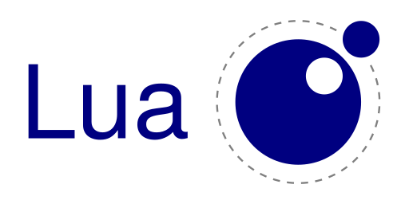

Software del computador

También es conocido como el "soporte físico" del computador, el software es un elemento muy importante para el funcionamiento de una computadora.
Existen dos tipos de software: el software de operación y el software de aplicación.
Software de operación
Está relacionado con el Sistema Operativo de la máquina. Es un programa o conjunto de
programas necesarios para que el computador este en capacidad de trabajar.
El sistema
operativo administra todo el hardware de la computadora y hace que el uso de la misma
sea fácil.
El software de operación hace que los dispositivos físicos del ordenador, tales como la
pantalla, el teclado, el mouse y el resto de elementos funcionen.
Este facilita a los
usuarios el uso de la computadora, sirviendo de interfaz o intermediario.
Existen en la actualidad distintos fabricantes y tipos de Sistemas Operativos, encontramos
en el mercado: Los Sistemas Operativos Windows de Microsoft, el Sistema Operativo Linux
desarrollado por distintas entidades de software libre en el mundo; Macintosh o Mac OS
de las computadoras Apple, UNIX, MS-DOS, y muchos otros Sistemas Operativos.

Software de aplicación
Está relacionado con los programas que utilizan los usuarios del sistema para realizar sus
trabajos o tareas. Hoy en día existen muchos programas de aplicación que facilitan el
desempeño y apoyan a las personas en sus actividades cotidianas.
Entre los diferentes
programas de aplicación, que encontramos en el mercado se encuentran los manejadores
de bases de datos, los procesadores de texto, los programas de diseño gráfico, las hojas
de cálculo, las aplicaciones administrativas de empresa y una variedad de utilidades que
facilitan y hacen más eficiente el trabajo hoy en día.
Son ejemplos de programas de
aplicación los siguientes:
• Microsoft Word (Procesador de texto)
• Paint (Diseño Gráfico)
• Corel Draw (Diseño Gráfico)
• Microsoft Excel (Hoja de cálculo)
• Microsoft Access (Manejador de bases de datos)
• Visual Basic (Lenguaje de programación)
• Google Chrome (Navegador de Internet)
• Microsoft PowerPoint (Diseño de presentaciones)
• Juegos
Lenguajes de programación
Un lenguaje de programación es un sistema notacional para describir
computaciones de una forma legible tanto para la máquina como para el ser
humano, permite a un programador especificar de manera precisa: sobre
qué datos una computadora debe operar, cómo deben ser estos almacenados y
transmitidos y qué acciones debe tomar bajo una variada gama de circunstancias.
Características: Eficiencia, expresividad, capacidad de mantenimiento, seguridad, simplicidad, productividad.
